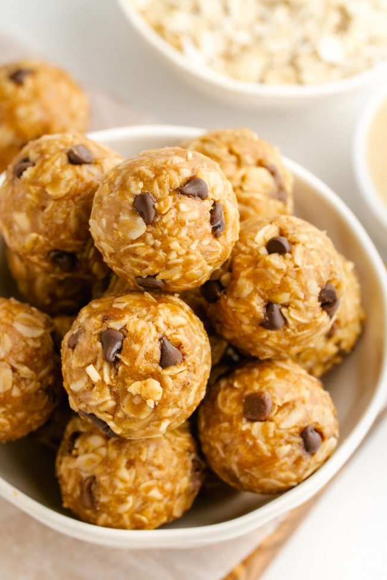

Protein Balls with Vanilla Protein Powder

Description
These protein balls make a great snack.
Pairs perfectly with a cup of tea! Store leftovers in the fridge.
Ingredients
- ½ cup rolled oats
- ⅓ cup almond butter
- ¼ cup quinoa
- ⅛ cup chia seeds
- ⅛ cup flax seeds
- 2 scoops vanilla protein powder
- 4 tablespoons cocoa nibs
- 3 tablespoons honey
Steps
- Mix oats, almond butter, quinoa, chia seeds,
flax seeds, protein powder, cocoa nibs, and honey together in a bowl by hand.
- Roll into bite-sized balls and place on parchment paper.
- Refrigerate for at least 20 minutes before serving.